PNI ソフトウェア健全性診断レポート
Member Analytics Portal（wp_plugin_messy v1.3.0）— WordPress プラグイン監査
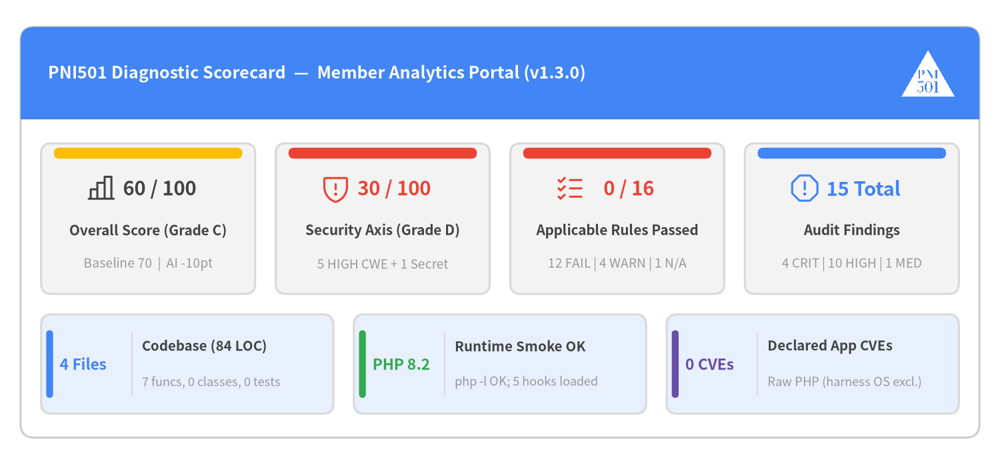
Source Code
from drawlib.canvas import save, setup
from drawlib.icons import phosphor
from drawlib.smartarts import KpiCards, Panel
from drawlib.styles import Colors, Styles
from drawlib.utils import draw_pni_logo
setup(width=146, height=68, dpi=150)
hero = Panel(
text="PNI501 Diagnostic Scorecard — Member Analytics Portal (v1.3.0)",
description="",
style=Styles.Neutral.patch(shape_r=2.0, shape_fill_color=Colors.White, shape_line_color=Colors.Gray4),
header_style=Styles.PrimaryFlat.patch(shape_r=2.0),
text_style=Styles.WhiteBold.patch(text_size=12.0),
header_variant="filled",
header_height=13.5,
header_align="left",
)
hero.draw((3.0, 4.0), width=140.0, height=60.0)
draw_pni_logo((135.5, 57.2), width=8.5, dark=True)
primary_kpis = KpiCards(
style=Styles.Neutral.patch(shape_r=1.5, shape_fill_color=Colors.Gray1, shape_line_color=Colors.Gray3),
metric_style=Styles.DarkBold.patch(text_size=14.0),
text_style=Styles.DarkBold.patch(text_size=10.0),
description_style=Styles.Muted.patch(text_size=9.2),
accent_position="top_bar",
metric_layout="top_stack",
spacing=3.0,
)
primary_kpis.add(
"60 / 100",
"Overall Score (Grade C)",
"Baseline 70 | AI -10pt",
accent_style=Styles.WarningFlat,
metric_style=Styles.WarningBold.patch(text_size=14.0),
icon=phosphor.chart_bar,
icon_style=Styles.Warning,
)
primary_kpis.add(
"30 / 100",
"Security Axis (Grade D)",
"5 HIGH CWE + 1 Secret",
accent_style=Styles.DangerFlat,
metric_style=Styles.DangerBold.patch(text_size=14.0),
icon=phosphor.shield_warning,
icon_style=Styles.Danger,
)
primary_kpis.add(
"0 / 16",
"Applicable Rules Passed",
"12 FAIL | 4 WARN | 1 N/A",
accent_style=Styles.DangerFlat,
metric_style=Styles.DangerBold.patch(text_size=14.0),
icon=phosphor.list_checks,
icon_style=Styles.Danger,
)
primary_kpis.add(
"15 Total",
"Audit Findings",
"4 CRIT | 10 HIGH | 1 MED",
accent_style=Styles.PrimaryFlat,
metric_style=Styles.PrimaryBold.patch(text_size=14.0),
icon=phosphor.warning_octagon,
icon_style=Styles.Primary,
)
primary_kpis.draw((6.0, 25.0), width=134.0, height=22.0, columns=4)
meta_kpis = KpiCards(
style=Styles.PrimaryNeutral.patch(shape_r=1.5, shape_line_color=Colors.Gray3),
metric_style=Styles.PrimaryBold.patch(text_size=11.0),
text_style=Styles.DarkBold.patch(text_size=9.8),
description_style=Styles.Muted.patch(text_size=8.8),
accent_position="left_pill",
metric_layout="left_column",
metric_width_ratio=0.31,
spacing=3.0,
)
meta_kpis.add(
"4 Files",
"Codebase (84 LOC)",
"7 funcs, 0 classes, 0 tests",
accent_style=Styles.PrimaryFlat,
)
meta_kpis.add(
"PHP 8.2",
"Runtime Smoke OK",
"php -l OK; 5 hooks loaded",
accent_style=Styles.SuccessFlat,
metric_style=Styles.SuccessBold.patch(text_size=11.0),
)
meta_kpis.add(
"0 CVEs",
"Declared App CVEs",
"Raw PHP (harness OS excl.)",
accent_style=Styles.SecondaryFlat,
metric_style=Styles.SecondaryBold.patch(text_size=11.0),
)
meta_kpis.draw((6.0, 7.5), width=134.0, height=14.5, columns=3)
save()
監査対象・来歴情報
| 項目 | 値 |
|---|---|
| プロジェクト / プラグイン名 | Member Analytics Portal（wp_plugin_messy v1.3.0） |
| 監査対象ディレクトリ | examples/php/wp_plugin_messy |
| 主要言語・フレームワーク | PHP（宣言 Requires PHP: 7.4 EOL・PHP 8.2 環境で検証） / WordPress プラグイン |
| ワークフロー / 実行 ID | php_wp_plugin_messy / wf-3389d5e7（category=audit, scope=repo） |
| 評価日時（UTC） | 2026-11-22T11:29:03.792183+00:00 |
| Git 来歴 | main@d1e02277 (dirty) |
| 総合健全性スコア | 60 / 100（グレード C） (決定論的ベースライン 70 → AI 定性補正 −10pt) |
| セキュリティ軸スコア | 30 / 100（グレード D） (HIGH CWE シンク 5 件、ハードコード秘密鍵 1 件、未認証エンドポイント 4/5) |
| ルール準拠率 | 適用ルール 0 / 16 合格（評価 17 ルール中 12 FAIL、4 WARN、1 NOT_APPLICABLE） |
| 指摘事項の内訳 | 全 15 件（ユニーク箇所 11 箇所：CRITICAL 4 / HIGH 10 / MEDIUM 1） |
1. エグゼクティブサマリー
wp_plugin_messy（Member Analytics Portal v1.3.0）の総合健全性スコアは 60/100（グレード C） です。全 4 ファイルにまたがる深刻な WordPress セキュリティ欠陥（Security 30/100・グレード D）、極端に乏しいドキュメント（27/100・グレード D）、型安全性ゼロ（36/100・グレード D）、および自動テスト不在（55/100・グレード C）が評価を大きく押し下げています。
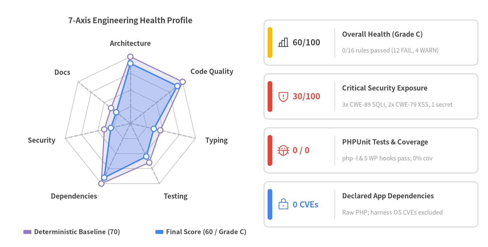
Source Code
from drawlib.canvas import save, setup
from drawlib.charts.radar import RadarChart
from drawlib.icons import phosphor
from drawlib.smartarts import KpiCards
from drawlib.styles import Colors, Styles
setup(width=146, height=74, dpi=150)
radar = RadarChart(
categories=[
"Architecture",
"Code Quality",
"Typing",
"Testing",
"Dependencies",
"Security",
"Docs",
],
axis_line_style=Styles.MutedDashed,
axis_text_style=Styles.DarkBold.patch(text_size=10.0),
grid_style=Styles.MutedThin,
radius=20.0,
width=74.0,
height=60.0,
min_value=0.0,
max_value=100.0,
levels=4,
grid_shape="polygon",
title="7-Axis Engineering Health Profile",
title_style=Styles.DarkBold.patch(text_size=11.5),
)
radar.add_series(
"Deterministic Baseline (70)",
[100, 100, 46, 65, 100, 40, 37],
style=Styles.SecondaryNeutral,
fill_alpha=0.18,
line_style="dashed",
)
radar.add_series(
"Final Score (60 / Grade C)",
[90, 90, 36, 55, 90, 30, 27],
style=Styles.PrimaryFlat,
fill_alpha=0.28,
)
radar.draw(xy=(2.0, 10.0))
radar.draw_legend(
xy=(7.0, 4.5),
text_style=Styles.DarkBold.patch(text_size=9.5),
orientation="horizontal",
item_gap=5.5,
)
kpis = KpiCards(
style=Styles.Neutral.patch(shape_r=1.5, shape_fill_color=Colors.White, shape_line_color=Colors.Gray3),
metric_style=Styles.DarkBold.patch(text_size=12.0),
text_style=Styles.DarkBold.patch(text_size=10.0),
description_style=Styles.Muted.patch(text_size=8.8),
accent_position="left_pill",
metric_layout="left_column",
metric_width_ratio=0.27,
spacing=2.6,
)
kpis.add(
"60/100",
"Overall Health (Grade C)",
"0/16 rules passed (12 FAIL, 4 WARN)",
accent_style=Styles.WarningFlat,
metric_style=Styles.WarningBold.patch(text_size=12.0),
icon=phosphor.chart_bar,
icon_style=Styles.Warning,
)
kpis.add(
"30/100",
"Critical Security Exposure",
"3x CWE-89 SQLi, 2x CWE-79 XSS, 1 secret",
accent_style=Styles.DangerFlat,
metric_style=Styles.DangerBold.patch(text_size=12.0),
icon=phosphor.shield_warning,
icon_style=Styles.Danger,
)
kpis.add(
"0 / 0",
"PHPUnit Tests & Coverage",
"php -l & 5 WP hooks pass; 0% cov",
accent_style=Styles.DangerFlat,
metric_style=Styles.DangerBold.patch(text_size=12.0),
icon=phosphor.bug,
icon_style=Styles.Danger,
)
kpis.add(
"0 CVEs",
"Declared App Dependencies",
"Raw PHP; harness OS CVEs excluded",
accent_style=Styles.PrimaryFlat,
metric_style=Styles.PrimaryBold.patch(text_size=12.0),
icon=phosphor.lock,
icon_style=Styles.Primary,
)
kpis.draw((79.0, 6.0), width=64.0, height=62.0, columns=1)
save()
総合所見
隔離された PHP 8.2 コンテナ環境での構文チェック（php -l）と WordPress フック読込スモークテスト（5 フック登録）は正常に完了し、Trivy SCA でも宣言済み Composer 依存 CVE は 0 件でした。しかし、決定論的 SAST・tree-sitter AST 解析・WordPress 定性セキュリティ監査の結果、全 4 モジュールにわたって即座に悪用可能な致命的脆弱性が確認されました。
- ハードコードされた認証情報漏洩（
CRITICAL）:includes/rest-endpoints.php:3がライブ形式の Webhook シークレット（<REDACTED_SECRET>）をグローバル変数$map_webhook_secretに直接代入しています。 - 未認証 SQL インジェクションと PII 流出（
CRITICAL）:GET /wp-json/member-analytics/v1/exportは'permission_callback' => '__return_true'で認証を完全に無効化した上で生の$_GET['role_filter']を$wpdb->usersクエリへ結合（?debug指定時はprint_r()出力も実行）しており、wp_ajax_nopriv_map_search_membersも未認証の$_POST['term']SQL インジェクション（CWE-89）経由でwp_usersを露出しています。 - 破壊的ログ削除・CSRF・反射型 XSS（
CRITICAL/HIGH）:map_ajax_purge_logsはcheck_ajax_referer()もcurrent_user_can('manage_options')も検証せず非パラメータ化DELETE FROM wp_map_eventsを実行して生の$_POST['category']を出力（CWE-79）します。さらにadmin/settings-page.phpは購読者権限（'read'）で設定変更・タイムアウト無指定の@file_get_contents()・生の$_GET['tab']出力を許し、member-analytics-portal.phpのショートコード[member_analytics_badge]も$_GET['badge_label']を未エスケープ出力しており、全 4 ファイルでdefined('ABSPATH') || exitが欠落しています。
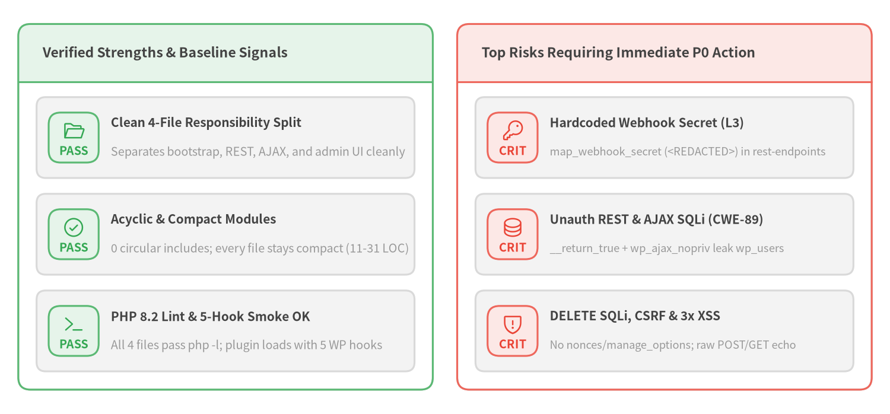
Source Code
from drawlib.canvas import save, setup
from drawlib.icons import phosphor
from drawlib.smartarts import CardList, Panel
from drawlib.styles import Colors, Styles
setup(width=146, height=68, dpi=150)
left_panel = Panel(
text="Verified Strengths & Baseline Signals",
style=Styles.Neutral.patch(shape_r=2.0, shape_fill_color=Colors.White, shape_line_color=Colors.Gray4),
header_style=Styles.SuccessNeutral.patch(shape_r=2.0),
text_style=Styles.DarkBold.patch(text_size=11.0),
header_variant="filled",
header_height=9.5,
)
left_panel.draw((3.0, 4.0), width=68.0, height=60.0)
strengths = CardList(
style=Styles.Neutral.patch(shape_r=1.5, shape_fill_color=Colors.Gray1, shape_line_color=Colors.Gray3),
text_style=Styles.DarkBold.patch(text_size=10.0),
description_style=Styles.Muted.patch(text_size=9.5),
badge_shape="rounded_rect",
badge_style=Styles.SuccessNeutral,
badge_text_style=Styles.SuccessBold.patch(text_size=9.5),
direction="vertical",
spacing=2.6,
)
strengths.add(
"Clean 4-File Responsibility Split",
"Separates bootstrap, REST, AJAX, and admin UI cleanly",
badge_text="PASS",
icon=phosphor.folder_open,
icon_style=Styles.Success,
)
strengths.add(
"Acyclic & Compact Modules",
"0 circular includes; every file stays compact (11-31 LOC)",
badge_text="PASS",
icon=phosphor.check_circle,
icon_style=Styles.Success,
)
strengths.add(
"PHP 8.2 Lint & 5-Hook Smoke OK",
"All 4 files pass php -l; plugin loads with 5 WP hooks",
badge_text="PASS",
icon=phosphor.terminal,
icon_style=Styles.Success,
)
strengths.draw((6.0, 7.0), width=62.0, height=45.0)
right_panel = Panel(
text="Top Risks Requiring Immediate P0 Action",
style=Styles.Neutral.patch(shape_r=2.0, shape_fill_color=Colors.White, shape_line_color=Colors.Gray4),
header_style=Styles.DangerNeutral.patch(shape_r=2.0),
text_style=Styles.DarkBold.patch(text_size=11.0),
header_variant="filled",
header_height=9.5,
)
right_panel.draw((75.0, 4.0), width=68.0, height=60.0)
risks = CardList(
style=Styles.Neutral.patch(shape_r=1.5, shape_fill_color=Colors.Gray1, shape_line_color=Colors.Gray3),
text_style=Styles.DarkBold.patch(text_size=10.0),
description_style=Styles.Muted.patch(text_size=8.8),
badge_shape="rounded_rect",
badge_style=Styles.DangerNeutral,
badge_text_style=Styles.DangerBold.patch(text_size=9.5),
direction="vertical",
spacing=2.6,
)
risks.add(
"Hardcoded Webhook Secret (L3)",
"map_webhook_secret (<REDACTED>) in rest-endpoints",
badge_text="CRIT",
icon=phosphor.key,
icon_style=Styles.Danger,
)
risks.add(
"Unauth REST & AJAX SQLi (CWE-89)",
"__return_true + wp_ajax_nopriv leak wp_users",
badge_text="CRIT",
icon=phosphor.database,
icon_style=Styles.Danger,
)
risks.add(
"DELETE SQLi, CSRF & 3x XSS",
"No nonces/manage_options; raw POST/GET echo",
badge_text="CRIT",
icon=phosphor.shield_warning,
icon_style=Styles.Danger,
)
risks.draw((78.0, 7.0), width=62.0, height=45.0)
save()
主要検証サマリー
| 検証領域 | ステータス | 観測テレメトリ |
|---|---|---|
| 総合健全性・準拠率 | グレード C（60/100） | 適用ルール 0/16 合格（12 FAIL, 4 WARN, 1 N/A）・指摘 15 件（CRIT 4, HIGH 10, MED 1） |
| 最低スコア監査ステップ | 全件グレード D | php_test_audit 10/100、security_vulnerability_audit 14/100、php_ast_audit 16/100 |
| コンテナランタイム検証 | 合格（スモークのみ） | Docker PHP 8.2 ビルド passed（49.1s）、php -l 合格、テスト 0/0（line_cov=N/A）、WP 5 フック検証 passed |
| セキュリティ・サプライチェーン | SAST 不合格 / SCA 0 CVE | 宣言アプリ CVE 0・IaC 設定不備 0（ハーネス OS CVE 分離済）・秘密鍵 1 件・HIGH CWE シンク 5 件 |
| 承認済み監査計画 | 自動承認 | Auto-approved via --auto-approve or plan_gate=false. |
2. アーキテクチャとソースコード構造
Member Analytics Portal（wp_plugin_messy v1.3.0） は、4 つの PHP ファイル（総 84 LOC、手続き型関数 7 個、クラス 0 個）による手続き型フラット WordPress プラグイン構造を採用しています。ファイル読み込み自体は循環依存のない非巡回構成ですが、全ハンドラが WordPress のグローバル $wpdb や生の HTTP スーパーグローバル（$_GET、$_POST）へ直接結合しており、OOP/PSR-4 境界、サニタイズ層、認可・Nonce ミドルウェアが一切存在しません。
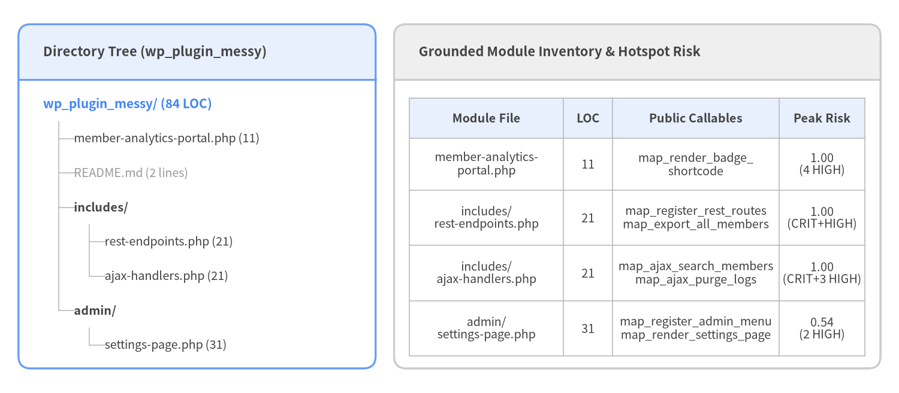
Source Code
from drawlib.canvas import save, setup
from drawlib.smartarts import Panel, Table, TreeNode
from drawlib.styles import Colors, Styles
setup(width=146, height=64, dpi=150)
left = Panel(
text="Directory Tree (wp_plugin_messy)",
style=Styles.Neutral.patch(shape_r=2.0, shape_fill_color=Colors.White, shape_line_color=Colors.Gray4),
header_style=Styles.PrimaryNeutral.patch(shape_r=2.0),
text_style=Styles.DarkBold.patch(text_size=10.5),
header_variant="filled",
header_height=9.0,
)
left.draw((3.0, 4.0), width=58.0, height=56.0)
tree_text = Styles.Dark.patch(text_size=9.5)
tree_bold = Styles.PrimaryBold.patch(text_size=10.0)
tree_line = Styles.MutedThin
root = TreeNode(
"wp_plugin_messy/ (84 LOC)",
text_style=tree_bold,
line_style=tree_line,
line_horizontal_margin=2.5,
line_horizontal_length=4.0,
line_vertical_margin=5.6,
children=[
TreeNode("member-analytics-portal.php (11)", text_style=tree_text, line_style=tree_line),
TreeNode("README.md (2 lines)", text_style=Styles.Muted.patch(text_size=9.5), line_style=tree_line),
TreeNode(
"includes/",
text_style=Styles.DarkBold.patch(text_size=9.5),
line_style=tree_line,
line_horizontal_margin=2.5,
line_horizontal_length=4.0,
line_vertical_margin=5.6,
children=[
TreeNode("rest-endpoints.php (21)", text_style=tree_text, line_style=tree_line),
TreeNode("ajax-handlers.php (21)", text_style=tree_text, line_style=tree_line),
],
),
TreeNode(
"admin/",
text_style=Styles.DarkBold.patch(text_size=9.5),
line_style=tree_line,
line_horizontal_margin=2.5,
line_horizontal_length=4.0,
line_vertical_margin=5.6,
children=[
TreeNode("settings-page.php (31)", text_style=tree_text, line_style=tree_line),
],
),
],
)
root.draw((7.0, 47.0))
right = Panel(
text="Grounded Module Inventory & Hotspot Risk",
style=Styles.Neutral.patch(shape_r=2.0, shape_fill_color=Colors.White, shape_line_color=Colors.Gray4),
header_style=Styles.Neutral.patch(shape_r=2.0),
text_style=Styles.DarkBold.patch(text_size=10.5),
header_variant="filled",
header_height=9.0,
)
right.draw((64.0, 4.0), width=79.0, height=56.0)
tbl = Table(
cell_style=Styles.Neutral.patch(shape_fill_color=Colors.White),
text_style=Styles.Dark.patch(text_size=9.5),
header_cell_style=Styles.PrimaryNeutral,
header_text_style=Styles.DarkBold.patch(text_size=9.5),
border_style=Styles.MutedThin,
has_header=True,
)
data = [
["Module File", "LOC", "Public Callables", "Peak Risk"],
["member-analytics-\nportal.php", "11", "map_render_badge_\nshortcode", "1.00\n(4 HIGH)"],
["includes/\nrest-endpoints.php", "21", "map_register_rest_routes\nmap_export_all_members", "1.00\n(CRIT+HIGH)"],
["includes/\najax-handlers.php", "21", "map_ajax_search_members\nmap_ajax_purge_logs", "1.00\n(CRIT+3 HIGH)"],
["admin/\nsettings-page.php", "31", "map_register_admin_menu\nmap_render_settings_page", "0.54\n(2 HIGH)"],
]
tbl.draw_flexible(
xy=(66.5, 48.0),
column_widths=[25.0, 8.0, 27.0, 14.0],
row_heights=[6.5, 8.5, 9.0, 9.0, 9.0],
data=data,
align="top_left",
)
save()
手続き型フック結合とリスクヒートマップ重畳
下図は、4 つの手続き型 PHP モジュールと共有 WordPress グローバル状態（$wpdb、$_GET、$_POST、wp_options、$map_webhook_secret）の結合関係に対し、module_hotspots の正規化リスクスコア（includes/ajax-handlers.php・includes/rest-endpoints.php・member-analytics-portal.php = 1.00、admin/settings-page.php = 0.54）を重畳表示したものです。

Source Code
from drawlib.canvas import save, setup
from drawlib.charts.heatmap import HeatmapOverlay
from drawlib.diagrams.class_diagram import ClassDiagram, ClassNode
from drawlib.styles import Colors, Styles
setup(width=160, height=102, dpi=150)
heat = HeatmapOverlay(
width=160.0,
height=102.0,
min_value=0.0,
max_value=1.0,
default_radius=20.0,
max_alpha=0.40,
show_contour_lines=False,
styles=[Styles.SuccessNeutral, Styles.WarningNeutral, Styles.DangerFlat],
)
heat.add_spot((80.0, 80.0), value=1.00, radius=19.0)
heat.add_spot((26.0, 46.0), value=1.00, radius=21.0)
heat.add_spot((80.0, 46.0), value=1.00, radius=21.0)
heat.add_spot((134.0, 46.0), value=0.54, radius=19.0)
heat.draw(xy=(0.0, 0.0))
cd = ClassDiagram(
node_style=Styles.Neutral.patch(shape_fill_color=Colors.White, shape_line_color=Colors.Gray5),
edge_style=Styles.DarkBold,
edge_text_style=Styles.DarkBold.patch(text_size=9.2),
title="Procedural WordPress Plugin Coupling & Thermal Risk Overlay (Risk 0.54 - 1.00)",
title_style=Styles.DarkBold.patch(text_size=11.5),
width=156.0,
height=98.0,
margin=4.0,
header_style=Styles.PrimaryNeutral,
)
entry = ClassNode(
"member-analytics-portal.php",
stereotype="entrypoint | risk 1.00",
width=52.0,
row_height=3.4,
style=Styles.Neutral.patch(shape_fill_color=Colors.White, shape_line_color=Colors.Gray5),
header_style=Styles.DangerNeutral,
)
entry.add_attribute("Requires PHP: 7.4 (EOL) | No ABSPATH", "", visibility="-")
entry.add_method("map_render_badge_shortcode", "atts", "raw HTML")
rest = ClassNode(
"includes/rest-endpoints.php",
stereotype="REST API | risk 1.00",
width=46.0,
row_height=3.4,
style=Styles.Neutral.patch(shape_fill_color=Colors.White, shape_line_color=Colors.Gray5),
header_style=Styles.DangerNeutral,
)
rest.add_attribute("permission_callback", "__return_true", visibility="+")
rest.add_attribute("CWE-89 + print_r()", "L19, L21", visibility="-")
rest.add_method("map_register_rest_routes", "", "void")
rest.add_method("map_export_all_members", "req", "array")
ajax = ClassNode(
"includes/ajax-handlers.php",
stereotype="AJAX | risk 1.00",
width=46.0,
row_height=3.4,
style=Styles.Neutral.patch(shape_fill_color=Colors.White, shape_line_color=Colors.Gray5),
header_style=Styles.DangerNeutral,
)
ajax.add_attribute("wp_ajax_nopriv", "no nonce / no cap", visibility="+")
ajax.add_attribute("2x CWE-89 + CWE-79", "L10, L21, L22", visibility="-")
ajax.add_method("map_ajax_search_members", "", "void")
ajax.add_method("map_ajax_purge_logs", "", "void")
admin = ClassNode(
"admin/settings-page.php",
stereotype="Admin UI | risk 0.54",
width=46.0,
row_height=3.4,
style=Styles.Neutral.patch(shape_fill_color=Colors.White, shape_line_color=Colors.Gray5),
header_style=Styles.WarningNeutral,
)
admin.add_attribute("add_options_page", "cap: 'read'", visibility="+")
admin.add_attribute("CWE-79 + @file_get", "L21, L26, L27", visibility="-")
admin.add_method("map_register_admin_menu", "", "void")
admin.add_method("map_render_settings_page", "", "void")
state = ClassNode(
"WordPress Global State & External I/O",
stereotype="shared globals (13 refs)",
width=78.0,
row_height=3.4,
style=Styles.Neutral.patch(shape_fill_color=Colors.White, shape_line_color=Colors.Gray5),
header_style=Styles.SecondaryNeutral,
)
state.add_attribute("global wpdb", "wp_users & wp_map_events (3 raw SQL)", visibility="+")
state.add_attribute("Superglobals", "10 unsanitized GET / POST reads", visibility="+")
state.add_attribute("Options & Secret", "map_telemetry_url + <REDACTED_SECRET>", visibility="+")
cd.add(entry, xy=(78.0, 77.0))
cd.add(rest, xy=(24.0, 46.0))
cd.add(ajax, xy=(78.0, 46.0))
cd.add(admin, xy=(132.0, 46.0))
cd.add(state, xy=(78.0, 12.0))
cd.connect(entry, rest, "dependency", label="require_once", start_side="left", end_side="top")
cd.connect(entry, ajax, "dependency", label="require_once", start_side="bottom", end_side="top")
cd.connect(entry, admin, "dependency", label="require_once", start_side="right", end_side="top")
cd.connect(rest, state, "association", label="wpdb / GET", start_side="bottom", end_side="left", style=Styles.DangerDashed)
cd.connect(ajax, state, "association", label="wpdb / POST", start_side="bottom", end_side="top", style=Styles.DangerDashed)
cd.connect(admin, state, "association", label="POST / opt", start_side="bottom", end_side="right", style=Styles.WarningDashed)
cd.draw(xy=(2.0, 2.0))
save()
実行時リクエストおよび攻撃フロー
本プラグインは REST API、admin-ajax.php、WordPress 管理画面オプションページ、フロントエンドショートコードにわたる 5 つのエントリーポイント を公開しています。下図は、信頼できない HTTP 入力からデータベースおよびブラウザシンクへ至る主要 3 系統の実行フローを示しています。
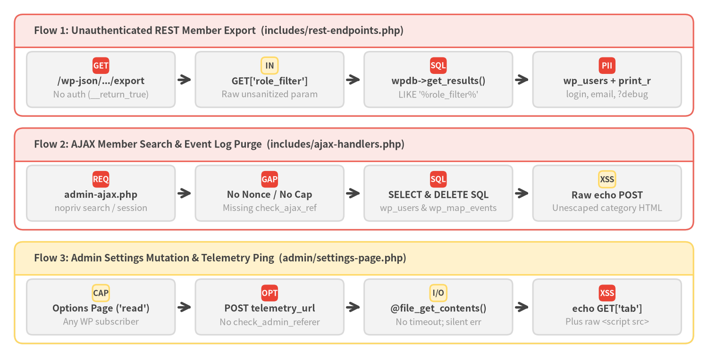
Source Code
from drawlib.canvas import save, setup
from drawlib.smartarts import CardList, Panel
from drawlib.styles import Colors, Styles
setup(width=146, height=74, dpi=150)
def draw_flow_lane(y_bottom: float, title: str, header_style, steps: list[tuple[str, str, str, object]]) -> None:
p = Panel(
text=title,
style=Styles.Neutral.patch(shape_r=1.8, shape_fill_color=Colors.White, shape_line_color=Colors.Gray4),
header_style=header_style.patch(shape_r=1.8),
text_style=Styles.DarkBold.patch(text_size=10.0),
header_variant="filled",
header_height=6.8,
)
p.draw((3.0, y_bottom), width=140.0, height=21.0)
cl = CardList(
style=Styles.Neutral.patch(shape_r=1.2, shape_fill_color=Colors.Gray1, shape_line_color=Colors.Gray3),
text_style=Styles.DarkBold.patch(text_size=9.5),
description_style=Styles.Muted.patch(text_size=9.0),
badge_shape="rounded_rect",
badge_style=Styles.PrimaryNeutral,
badge_text_style=Styles.DarkBold.patch(text_size=9.0),
direction="horizontal",
spacing=3.5,
show_arrows=True,
arrow_style=Styles.DarkBold,
)
for badge, heading, desc, b_style in steps:
t_style = Styles.WhiteBold.patch(text_size=8.0) if b_style == Styles.DangerFlat else Styles.DarkBold.patch(text_size=8.0)
cl.add(heading, desc, badge_text=badge, badge_style=b_style, badge_text_style=t_style)
cl.draw((5.5, y_bottom + 1.8), width=135.0, height=11.5)
draw_flow_lane(
50.0,
"Flow 1: Unauthenticated REST Member Export (includes/rest-endpoints.php)",
Styles.DangerNeutral,
[
("GET", "/wp-json/.../export", "No auth (__return_true)", Styles.DangerFlat),
("IN", "GET['role_filter']", "Raw unsanitized param", Styles.WarningNeutral),
("SQL", "wpdb->get_results()", "LIKE '%role_filter%'", Styles.DangerFlat),
("PII", "wp_users + print_r", "login, email, ?debug", Styles.DangerFlat),
],
)
draw_flow_lane(
26.5,
"Flow 2: AJAX Member Search & Event Log Purge (includes/ajax-handlers.php)",
Styles.DangerNeutral,
[
("REQ", "admin-ajax.php", "nopriv search / session", Styles.DangerFlat),
("GAP", "No Nonce / No Cap", "Missing check_ajax_ref", Styles.DangerFlat),
("SQL", "SELECT & DELETE SQL", "wp_users & wp_map_events", Styles.DangerFlat),
("XSS", "Raw echo POST", "Unescaped category HTML", Styles.WarningNeutral),
],
)
draw_flow_lane(
3.0,
"Flow 3: Admin Settings Mutation & Telemetry Ping (admin/settings-page.php)",
Styles.WarningNeutral,
[
("CAP", "Options Page ('read')", "Any WP subscriber", Styles.WarningNeutral),
("OPT", "POST telemetry_url", "No check_admin_referer", Styles.DangerFlat),
("I/O", "@file_get_contents()", "No timeout; silent err", Styles.WarningNeutral),
("XSS", "echo GET['tab']", "Plus raw <script src>", Styles.DangerFlat),
],
)
save()
レイヤー構成と境界評価
| レイヤー | 対象パス | 許可依存先 | 責務および健全性評価 |
|---|---|---|---|
| プラグイン起動・ショートコード層 | member-analytics-portal.php |
REST・AJAX・Admin 各モジュール | 手動 require_once、フック登録（rest_api_init・ショートコード）、[member_analytics_badge] 描画を担当。ABSPATH ガード欠落、EOL PHP 7.4 宣言、$_GET['badge_label'] XSS が存在。 |
| REST エンドポイント層 | includes/rest-endpoints.php |
(なし) | /wp-json/member-analytics/v1/export を登録し $wpdb->users を検索。$map_webhook_secret（<REDACTED_SECRET>）のハードコード、__return_true、CWE-89 SQLi、print_r() デバッグ漏洩を含む。 |
| AJAX ハンドラ層 | includes/ajax-handlers.php |
(なし) | wp_ajax_nopriv_map_search_members および wp_ajax_map_purge_logs を登録。非パラメータ化 SELECT/DELETE SQLi、Nonce/権限検証欠落、未エスケープ echo XSS が集中。 |
| 管理設定画面層 | admin/settings-page.php |
(なし) | 'read' 権限で管理オプション画面を登録し、map_telemetry_url 保存・@file_get_contents() による外部テレメトリ通信・インライン HTML/JS 出力を実行。 |
リスク降順モジュールホットスポット（module_hotspots）
PNI は決定論的 AST パス（examples/php/wp_plugin_messy/...）と AI 定性相対パスの双方を集計しています。全 8 エントリをリスク降順で以下に示します。
| ファイルパス | LOC | リスクスコア | 指摘件数 | 主要ルール / CWE |
|---|---|---|---|---|
examples/php/wp_plugin_messy/includes/ajax-handlers.php |
21 | 1.00 | HIGH 3 | CWE-79, CWE-89 |
examples/php/wp_plugin_messy/includes/rest-endpoints.php |
21 | 1.00 | CRIT 1, HIGH 1 | common/security, CWE-89 |
member-analytics-portal.php |
— | 1.00 | HIGH 4 | php/dependencies, common/security, common/runtime_verification, php/typing |
includes/rest-endpoints.php |
— | 0.90 | CRIT 2 | common/security, php/frameworks/wordpress |
examples/php/wp_plugin_messy/admin/settings-page.php |
31 | 0.54 | HIGH 1 | CWE-79 |
includes/ajax-handlers.php |
— | 0.45 | CRIT 1 | php/frameworks/wordpress |
admin/settings-page.php |
— | 0.28 | HIGH 1 | php/frameworks/wordpress |
examples/php/wp_plugin_messy/member-analytics-portal.php |
11 | 0.14 | 0 | (決定論的 AST ベースライン) |
状態管理・永続化およびエラー処理モデル
- データベース状態:
global $wpdbを経由し$wpdb->prepare()を使わずに WordPress MySQL テーブル（$wpdb->usersおよびwp_map_events）へ直接クエリを発行。 - オプション永続化: サニタイズや Nonce 検証なしに
$_POST['map_telemetry_url']をupdate_option('map_telemetry_url', ...)へ永続化。 - グローバル秘密鍵:
includes/rest-endpoints.php:3のモジュールスコープで$map_webhook_secret = '<REDACTED_SECRET>'をハードコード。 - エラー・並行処理モデル: WordPress 配下の同期リクエスト処理であり、
@file_get_contents()によるサイレントエラー抑止とprint_r()による無構造出力が行われ、防御的バリデーションや例外処理が存在しません。
3. 推奨改善ロードマップ
是正作業は厳格なリスク優先順位で進める必要があります。P0 で即座に悪用可能なリモート攻撃経路（ハードコード秘密鍵、SQLi、XSS、CSRF、認可不備、直接アクセス）を遮断し、P1 でタイムアウト付き HTTP I/O、PHP 8.2+ 厳格型・Composer PSR-4 化および PHPUnit セキュリティ回帰テストを整備し、P2 で CI/CD ガバナンスとドキュメントを定着させます。
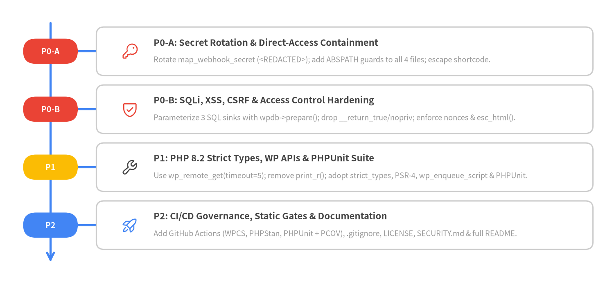
Source Code
from drawlib.canvas import save, setup
from drawlib.icons import phosphor
from drawlib.smartarts import Roadmap
from drawlib.styles import Colors, Styles
setup(width=146, height=68, dpi=150)
rm = Roadmap(
style=Styles.Neutral.patch(shape_r=1.8, shape_fill_color=Colors.White, shape_line_color=Colors.Gray4),
text_style=Styles.DarkBold.patch(text_size=10.5),
description_style=Styles.Muted.patch(text_size=8.8),
spine_style=Styles.PrimaryBold,
badge_style=Styles.PrimaryFlat,
badge_text_style=Styles.WhiteBold.patch(text_size=9.5),
direction="vertical",
card_shape="rounded_rect",
spacing=2.6,
)
rm.add(
"P0-A: Secret Rotation & Direct-Access Containment",
"Rotate map_webhook_secret (<REDACTED>); add ABSPATH guards to all 4 files; escape shortcode.",
badge_text="P0-A",
badge_style=Styles.DangerFlat,
icon=phosphor.key,
icon_style=Styles.Danger,
)
rm.add(
"P0-B: SQLi, XSS, CSRF & Access Control Hardening",
"Parameterize 3 SQL sinks with wpdb->prepare(); drop __return_true/nopriv; enforce nonces & esc_html().",
badge_text="P0-B",
badge_style=Styles.DangerFlat,
icon=phosphor.shield_check,
icon_style=Styles.Danger,
)
rm.add(
"P1: PHP 8.2 Strict Types, WP APIs & PHPUnit Suite",
"Use wp_remote_get(timeout=5); remove print_r(); adopt strict_types, PSR-4, wp_enqueue_script & PHPUnit.",
badge_text="P1",
badge_style=Styles.WarningFlat,
icon=phosphor.wrench,
icon_style=Styles.Warning,
)
rm.add(
"P2: CI/CD Governance, Static Gates & Documentation",
"Add GitHub Actions (WPCS, PHPStan, PHPUnit + PCOV), .gitignore, LICENSE, SECURITY.md & full README.",
badge_text="P2",
badge_style=Styles.PrimaryFlat,
icon=phosphor.rocket_launch,
icon_style=Styles.Primary,
)
rm.draw((4.0, 4.0), width=138.0, height=60.0)
save()
スコア改善見込みと施策構成
緊急対応 P0 の 4 施策とモダナイゼーション・テスト基盤構築 P1 の 4 施策を実行することで、低評価の 4 軸（Security・Documentation・Typing・Testing）が大幅に改善し、総合評価はグレード C（60/100）からグレード A/B 水準へ引き上がります。

Source Code
from drawlib.canvas import save, setup
from drawlib.charts.bar import BarChart
from drawlib.icons import phosphor
from drawlib.smartarts import KpiCards
from drawlib.styles import Colors, Styles
from drawlib.text import text
setup(width=146, height=64, dpi=150)
text(
(46.0, 59.5),
"Score Uplift on Lagging Axes (Current vs. Post-P1/P2 Target)",
style=Styles.DarkBold.patch(text_size=10.8),
)
bar = BarChart(
categories=["Security", "Docs", "Typing", "Testing", "Overall"],
axis_line_style=Styles.MutedDashed,
axis_text_style=Styles.DarkBold.patch(text_size=10.0),
grid_style=Styles.MutedThin,
width=80.0,
height=42.0,
bar_mode="group",
bar_r=0.8,
value_text_style=Styles.DarkBold.patch(text_size=9.5),
value_format="{:.0f}",
)
bar.add_series("Current Audit", [30.0, 27.0, 36.0, 55.0, 60.0], style=Styles.DangerNeutral)
bar.add_series("Target Post-P1/P2", [85.0, 80.0, 85.0, 85.0, 86.0], style=Styles.PrimaryFlat)
bar.draw(xy=(6.0, 12.0))
bar.draw_legend(
xy=(18.0, 4.5),
text_style=Styles.DarkBold.patch(text_size=9.5),
orientation="horizontal",
item_gap=6.0,
)
cards = KpiCards(
style=Styles.Neutral.patch(shape_r=1.5, shape_fill_color=Colors.White, shape_line_color=Colors.Gray3),
metric_style=Styles.DarkBold.patch(text_size=12.0),
text_style=Styles.DarkBold.patch(text_size=9.8),
description_style=Styles.Muted.patch(text_size=8.8),
accent_position="left_pill",
metric_layout="left_column",
metric_width_ratio=0.25,
spacing=2.8,
)
cards.add(
"4 P0",
"Urgent Security Fixes",
"Secret, 3x SQLi, 3x XSS, auth",
accent_style=Styles.DangerFlat,
metric_style=Styles.DangerBold.patch(text_size=12.0),
icon=phosphor.shield_warning,
icon_style=Styles.Danger,
)
cards.add(
"4 P1",
"Modernization & Tests",
"wp_remote_get, PHP 8.2, PHPUnit",
accent_style=Styles.WarningFlat,
metric_style=Styles.WarningBold.patch(text_size=12.0),
icon=phosphor.wrench,
icon_style=Styles.Warning,
)
cards.add(
"P2",
"CI & Governance Gate",
"WPCS, PHPStan, README, LICENSE",
accent_style=Styles.PrimaryFlat,
metric_style=Styles.PrimaryBold.patch(text_size=12.0),
icon=phosphor.check_circle,
icon_style=Styles.Primary,
)
cards.draw((90.0, 9.0), width=53.0, height=48.0, columns=1)
save()
アクションプラン・トレーサビリティマトリクス（P0 -> P1 -> P2）
action_plan の優先順位付き 8 項目と推奨 P2 ガバナンス施策について、対象ファイル・期待効果・関連ルール / CWE との対応を以下に整理します。
| # | 優先度 | 施策タイトル・カテゴリ | 対象ファイル | 期待される改善効果 | 関連ルール / CWE |
|---|---|---|---|---|---|
| 1 | P0 | ABSPATH ガード追加とショートコード出力エスケープ（security） |
member-analytics-portal.php |
公開ショートコード [member_analytics_badge] の反射型 XSS と直接スクリプト実行を排除。 |
common/security |
| 2 | P0 | REST・AJAX・Admin 全ハンドラの SQLi・XSS・CSRF・認可不備解消（security） |
includes/rest-endpoints.php, includes/ajax-handlers.php, admin/settings-page.php, member-analytics-portal.php |
HIGH CWE-89/CWE-79 シンク全 5 件、未認証 PII 流出、破壊的ログ削除を一括無力化。 |
php/frameworks/wordpress, common/security_vulnerability, CWE-89, CWE-79, CWE-352, CWE-862 |
| 3 | P0 | CWE-89 SQLi・CWE-79 XSS・秘密鍵・未認証エンドポイントの完全是正（security） |
includes/rest-endpoints.php, includes/ajax-handlers.php, admin/settings-page.php, member-analytics-portal.php |
リモート SQL インジェクション、wp_users 情報漏洩、任意ログ削除および XSS リスクを解消。 |
common/security_vulnerability, SEC-03, SEC-04, SEC-05, CWE-89, CWE-79 |
| 4 | P0 | ハードコード $map_webhook_secret（<REDACTED_SECRET>）削除と外部化（security） |
includes/rest-endpoints.php |
ソースコード内の CRITICAL 認証情報漏洩を解消し、鍵ローテーションおよび環境変数/wp-config.php 管理へ移行。 |
common/security, common/supply_chain |
| 5 | P1 | @file_get_contents の wp_remote_get 置換と print_r 削除（code_quality） |
admin/settings-page.php, includes/rest-endpoints.php |
PHP ワーカーのスレッドハング、サイレントエラー隠蔽、および ?debug デバッグ漏洩を排除。 |
common/production_readiness, common/twelve_factor |
| 6 | P1 | Composer PSR-4 パッケージ化・PHP 8.2+ 対応・CI ガバナンス導入（dependencies） |
member-analytics-portal.php |
EOL PHP 7.4 の生 PHP 構成から、サポート対象 PHP 8.2+/8.3+ および Composer サプライチェーン管理へ移行。 | php/dependencies, php/modern_stack, common/supply_chain |
| 7 | P1 | PHPUnit + WP_Mock/Brain Monkey セキュリティ回帰テストと PCOV 計測導入（testing） |
member-analytics-portal.php, includes/rest-endpoints.php, includes/ajax-handlers.php, admin/settings-page.php |
権限検証・Nonce・$wpdb->prepare()・esc_html() の自動回帰テストとカバレッジ計測を確立。 |
common/runtime_verification |
| 8 | P1 | PHP 8.2+ strict_types・PSR-4 クラス化・wp_remote_get・wp_enqueue_script 化（typing） |
member-analytics-portal.php, admin/settings-page.php |
暗黙型変換、タイムアウト無指定 HTTP 呼び出し、ハードコード <script src=...> を排除。 |
php/typing, php/code_quality, php/modern_stack, php/frameworks/wordpress |
| 9 | P2 | README.md・PHPDoc・.gitignore・LICENSE・SECURITY.md・GitHub Actions 整備（governance） |
README.md, .github/workflows/*, composer.json |
残存する common/documentation・common/git_workflow・common/supply_chain ギャップを解消。 |
common/documentation, common/git_workflow, common/supply_chain |
4. 監査パイプライン（DAG）・評価基準・指摘事項
本章では、実際に実行された監査パイプライン（DAG）、決定論的ツールの検査スコープ、7 軸スコアのアンカリング（決定論的ベースラインに対する AI 補正 ±10pt 上限）、全 17 ルールの準拠マトリクス、統合指摘一覧、および機械可読アーティファクトの来歴を透明性高く開示します。
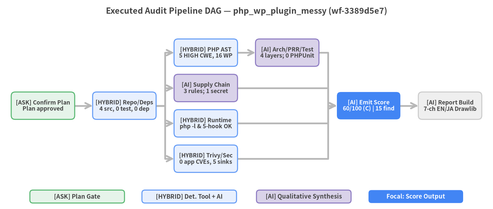
Source Code
from drawlib.canvas import save, setup
from drawlib.graph import LayerGraph
from drawlib.lines import lines
from drawlib.shapes import rectangle
from drawlib.styles import Styles
from drawlib.text import text
setup(width=198, height=84, dpi=150)
text(
(99.0, 79.5),
"Executed Audit Pipeline DAG — php_wp_plugin_messy (wf-3389d5e7)",
style=Styles.DarkBold.patch(text_size=12.0),
)
g = LayerGraph(
direction="LR",
rank_sep=7.2,
node_sep=3.2,
edge_routing="orthogonal",
default_node_width=25.5,
default_node_height=11.0,
)
g.edge("confirm_plan", "repo_and_deps")
g.edge("repo_and_deps", "ast_and_quality")
g.edge("repo_and_deps", "supply_chain")
g.edge("repo_and_deps", "runtime_verification")
g.edge("repo_and_deps", "security_audit")
g.edge("ast_and_quality", "arch_prr_tests")
g.edge("arch_prr_tests", "output_score")
g.edge("supply_chain", "output_score")
g.edge("runtime_verification", "output_score")
g.edge("security_audit", "output_score")
g.edge("output_score", "create_report")
layout = g.get_layout(width=198.0, height=74.0, margin=5.0)
# Align arch_prr_tests with ast_and_quality (top row) so lower bypass buses stay clear
dy_align = layout["ast_and_quality"].y - layout["arch_prr_tests"].y
layout.offset("arch_prr_tests", dy=dy_align)
bus_in_x = (layout["repo_and_deps"].right + layout["ast_and_quality"].left) / 2.0
bus_out_x = (layout["arch_prr_tests"].right + layout["output_score"].left) / 2.0
def connect_ortho(src_id: str, dst_id: str, mid_x: float | None = None) -> None:
s = layout[src_id]
d = layout[dst_id]
y_shift = 4.5
if abs(s.y - d.y) < 0.2:
pts = [(s.right, s.y + y_shift), (d.left, d.y + y_shift)]
else:
mx = mid_x if mid_x is not None else (s.right + d.left) / 2.0
pts = [(s.right, s.y + y_shift), (mx, s.y + y_shift), (mx, d.y + y_shift), (d.left, d.y + y_shift)]
lines(pts, arrow_head="->", style=Styles.MutedBold)
connect_ortho("confirm_plan", "repo_and_deps")
for mid_id in ["ast_and_quality", "supply_chain", "runtime_verification", "security_audit"]:
connect_ortho("repo_and_deps", mid_id, mid_x=bus_in_x)
connect_ortho("ast_and_quality", "arch_prr_tests")
connect_ortho("arch_prr_tests", "output_score", mid_x=bus_out_x)
for bypass_id in ["supply_chain", "runtime_verification", "security_audit"]:
connect_ortho(bypass_id, "output_score", mid_x=bus_out_x)
connect_ortho("output_score", "create_report")
nodes_spec = [
("confirm_plan", "[ASK] Confirm Plan\nPlan approved", Styles.SuccessNeutral, Styles.DarkBold),
("repo_and_deps", "[HYBRID] Repo/Deps\n4 src, 0 test, 0 dep", Styles.PrimaryNeutral, Styles.DarkBold),
("ast_and_quality", "[HYBRID] PHP AST\n5 HIGH CWE, 16 WP", Styles.PrimaryNeutral, Styles.DarkBold),
("supply_chain", "[AI] Supply Chain\n3 rules; 1 secret", Styles.SecondaryNeutral, Styles.DarkBold),
("runtime_verification", "[HYBRID] Runtime\nphp -l & 5-hook OK", Styles.PrimaryNeutral, Styles.DarkBold),
("security_audit", "[HYBRID] Trivy/Sec\n0 app CVEs, 5 sinks", Styles.PrimaryNeutral, Styles.DarkBold),
("arch_prr_tests", "[AI] Arch/PRR/Test\n4 layers; 0 PHPUnit", Styles.SecondaryNeutral, Styles.DarkBold),
("output_score", "[AI] Emit Score\n60/100 (C) | 15 find", Styles.PrimaryFlat, Styles.WhiteBold),
("create_report", "[AI] Report Build\n7-ch EN/JA Drawlib", Styles.Neutral, Styles.DarkBold),
]
for nid, label, box_style, txt_style in nodes_spec:
n = layout[nid]
rectangle(
(n.x, n.y + 4.5),
width=n.width,
height=n.height,
style=box_style.patch(shape_r=1.6),
text=label,
text_style=txt_style.patch(text_size=8.4),
)
legend_items = [
(31.0, "[ASK] Plan Gate", Styles.SuccessNeutral, Styles.DarkBold),
(76.0, "[HYBRID] Det. Tool + AI", Styles.PrimaryNeutral, Styles.DarkBold),
(122.0, "[AI] Qualitative Synthesis", Styles.SecondaryNeutral, Styles.DarkBold),
(167.0, "Focal: Score Output", Styles.PrimaryFlat, Styles.WhiteBold),
]
for lx, ltxt, lstyle, ltstyle in legend_items:
rectangle(
(lx, 5.0),
width=38.0,
height=5.2,
style=lstyle.patch(shape_r=1.2),
text=ltxt,
text_style=ltstyle.patch(text_size=8.8),
)
save()
検査スコープおよび実行した決定論的ツール
| スコープ項目 | 監査実行値 |
|---|---|
| 対象ルート・パス | examples/php/wp_plugin_messy（source=['.'], tests=['tests'], docs=['README.md'], exclude=[]） |
| 言語・フレームワーク | 主要言語: php ・ 補助言語: なし ・ 検出フレームワーク: wordpress |
| Git 来歴 | main@d1e02277 (dirty) |
| 実行した決定論的ツール | project_inspect (php)、tree-sitter AST (php)、container runtime harness (docker: php/raw.dockerfile)、Trivy (docker: fs+image) |
| 論理パイプラインステージ | 全 11 ステージ（confirm_plan, repo_and_deps, supply_chain, ast_and_quality, runtime_verification, security_audit, arch_recording, service_readiness, test_health, output_score, create_report）— スキップ 0 件 |
7 軸決定論的ベースライン vs. AI 補正（±10pt）
PNI は AST・ランタイム・SCA の決定論的ファクトから各軸のベースラインスコアを算出し、AI による定性補正を各軸 ±10pt 以内に制限します。wp_plugin_messy では構造的な WordPress セキュリティ不備、型・テスト欠如、および生 PHP 負債により、全 7 軸で上限の −10pt 補正（総合 70 -> 60）が適用されました。
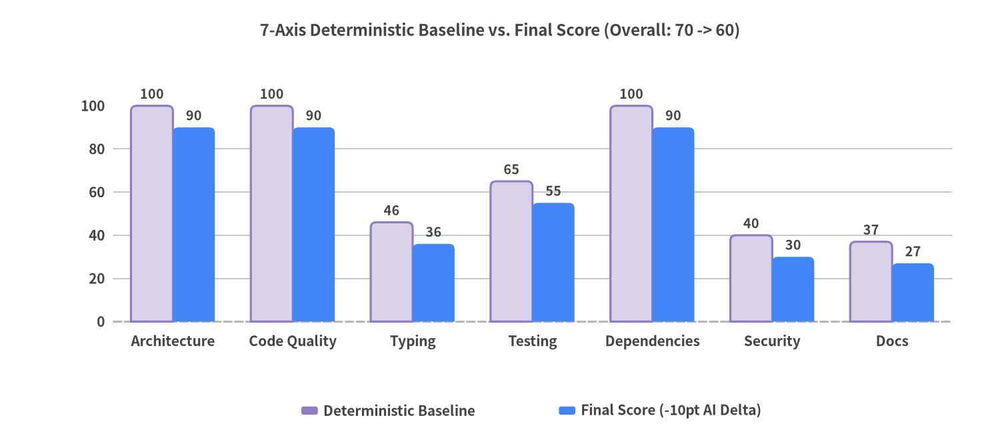
Source Code
from drawlib.canvas import save, setup
from drawlib.charts.bar import BarChart
from drawlib.styles import Styles
from drawlib.text import text
setup(width=146, height=64, dpi=150)
text(
(73.0, 59.5),
"7-Axis Deterministic Baseline vs. Final Score (Overall: 70 -> 60)",
style=Styles.DarkBold.patch(text_size=11.5),
)
chart = BarChart(
categories=[
"Architecture",
"Code Quality",
"Typing",
"Testing",
"Dependencies",
"Security",
"Docs",
],
axis_line_style=Styles.MutedDashed,
axis_text_style=Styles.DarkBold.patch(text_size=10.0),
grid_style=Styles.MutedThin,
width=134.0,
height=39.0,
bar_mode="group",
bar_r=0.8,
value_text_style=Styles.DarkBold.patch(text_size=9.5),
value_format="{:.0f}",
)
chart.add_series("Deterministic Baseline", [100.0, 100.0, 46.0, 65.0, 100.0, 40.0, 37.0], style=Styles.SecondaryNeutral)
chart.add_series("Final Score (-10pt AI Delta)", [90.0, 90.0, 36.0, 55.0, 90.0, 30.0, 27.0], style=Styles.PrimaryFlat)
chart.draw(xy=(8.0, 12.0))
chart.draw_legend(
xy=(44.0, 4.0),
text_style=Styles.DarkBold.patch(text_size=10.0),
orientation="horizontal",
item_gap=8.0,
)
save()
| 評価軸 | ベースライン | AI Δ | 最終 | グレード | 補正根拠 |
|---|---|---|---|---|---|
| Architecture | 100 | −10 | 90 | A | 非巡回の 4 ファイル分割だが、グローバル手続き関数・手動 require_once・13 箇所のスーパーグローバル/$wpdb 直接参照に依存し OOP/PSR-4 境界が皆無。 |
| Code Quality | 100 | −10 | 90 | A | 16 件の WordPress フレームワーク違反、タイムアウト無指定の @file_get_contents() エラー抑止、print_r() 漏洩、ハードコード <script src=...>。 |
| Typing | 46 | −10 | 36 | D | 型安全性 0.0%：全 4 ファイルで declare(strict_types=1) 欠落、全 7 関数で引数・戻り値型宣言なし。 |
| Testing | 65 | −10 | 55 | C | PHPUnit/Pest テスト 0 件（計測カバレッジ 0%）のため、php -l と 5 フックスモーク以外の REST・AJAX・DB・管理画面ロジックが完全未検証。 |
| Dependencies | 100 | −10 | 90 | A | 宣言 Composer CVE は 0 件だが、EOL PHP >=7.4 対象の未管理生 PHP 構成であり CI・LICENSE・SECURITY.md・Dependabot がすべて欠落。 |
| Security | 40 | −10 | 30 | D | 全 4 ファイルにまたがる多面的な WordPress 脆弱性（ハードコード秘密鍵、CWE-89 SQLi 3 件、CWE-79 XSS 3 箇所、未認証 PII 流出、'read' 権限昇格、Nonce・ABSPATH 欠落）。 |
| Documentation | 37 | −10 | 27 | D | わずか 2 行の README.md と、全 7 公開関数で 0.0% の PHPDoc カバレッジ。 |
| 総合スコア | 70 | −10 | 60 | C | 決定論的ベースラインに対し全軸の定性セキュリティ・品質減点（−10pt）を反映した加重総合評価。 |
監査ステップ別スコア（低評価順）
個別の全 7 監査ステップはいずれも**グレード D（10〜45/100）**となり、テスト監査（10/100）、セキュリティ脆弱性監査（14/100）、PHP AST 監査（16/100）が特に低い結果でした。
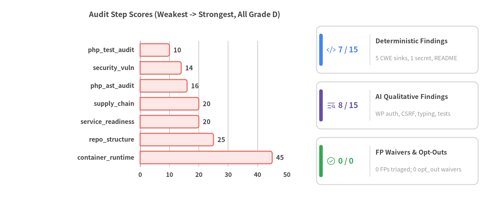
Source Code
from drawlib.canvas import save, setup
from drawlib.charts.bar import BarChart
from drawlib.icons import phosphor
from drawlib.smartarts import KpiCards
from drawlib.styles import Colors, Styles
from drawlib.text import text
setup(width=148, height=64, dpi=150)
text(
(56.0, 59.5),
"Audit Step Scores (Weakest -> Strongest, All Grade D)",
style=Styles.DarkBold.patch(text_size=11.0),
)
bar = BarChart(
categories=[
"php_test_audit",
"security_vuln",
"php_ast_audit",
"supply_chain",
"service_readiness",
"repo_structure",
"container_runtime",
],
axis_line_style=Styles.MutedDashed,
axis_text_style=Styles.DarkBold.patch(text_size=9.2),
grid_style=Styles.MutedThin,
width=60.0,
height=46.0,
orientation="horizontal",
bar_r=0.7,
value_text_style=Styles.DarkBold.patch(text_size=9.5),
value_format="{:.0f}",
)
bar.add_series("Step Score", [10.0, 14.0, 16.0, 20.0, 20.0, 25.0, 45.0], style=Styles.DangerNeutral)
bar.draw(xy=(30.0, 8.0))
cards = KpiCards(
style=Styles.Neutral.patch(shape_r=1.5, shape_fill_color=Colors.White, shape_line_color=Colors.Gray3),
metric_style=Styles.DarkBold.patch(text_size=11.5),
text_style=Styles.DarkBold.patch(text_size=9.5),
description_style=Styles.Muted.patch(text_size=8.6),
accent_position="left_pill",
metric_layout="left_column",
metric_width_ratio=0.28,
spacing=2.6,
)
cards.add(
"7 / 15",
"Deterministic Findings",
"5 CWE sinks, 1 secret, README",
accent_style=Styles.PrimaryFlat,
metric_style=Styles.PrimaryBold.patch(text_size=11.5),
icon=phosphor.code,
icon_style=Styles.Primary,
)
cards.add(
"8 / 15",
"AI Qualitative Findings",
"WP auth, CSRF, typing, tests",
accent_style=Styles.SecondaryFlat,
metric_style=Styles.SecondaryBold.patch(text_size=11.5),
icon=phosphor.list_magnifying_glass,
icon_style=Styles.Secondary,
)
cards.add(
"0 / 0",
"FP Waivers & Opt-Outs",
"0 FPs triaged; 0 opt_out waivers",
accent_style=Styles.SuccessFlat,
metric_style=Styles.SuccessBold.patch(text_size=11.5),
icon=phosphor.check_circle,
icon_style=Styles.Success,
)
cards.draw((96.0, 8.0), width=49.0, height=48.0, columns=1)
save()
ルール準拠マトリクス（FAIL -> WARN -> N/A・全 17 ルール）
| 判定 | ルール ID | 評価ステップ | 根拠サマリー |
|---|---|---|---|
| FAIL | common/documentation |
repo_structure_audit |
README.md は 2 行のみで、導入要件・ショートコード/REST 仕様・セキュリティ/開発手順が欠落。 |
| FAIL | common/production_readiness |
container_runtime_audit |
admin/settings-page.php:21 がタイムアウト無指定で @file_get_contents() を呼びエラーを抑止、includes/rest-endpoints.php:21 が print_r() で生データを出力。 |
| FAIL | common/runtime_verification |
container_runtime_audit |
ビルド・php -l・5 フックスモークは合格だが、PHPUnit テストが 0 件で coverage.measured=False。 |
| FAIL | common/security |
repo_structure_audit |
ハードコード $map_webhook_secret（<REDACTED_SECRET>）、SQLi 3 件、XSS 3 箇所（ショートコード $_GET['badge_label'] 含む）、未認証 PII 流出、CSRF/権限欠落、ABSPATH 欠落。 |
| FAIL | common/security_vulnerability |
php_ast_audit |
SEC-01 宣言アプリ CVE 0（ハーネス OS 除外）・SEC-02 N/A・SEC-03 FAIL（ハードコード秘密鍵）・SEC-04 FAIL（HIGH CWE 5 件）・SEC-05 FAIL（未認証エンドポイント 4/5）。 |
| FAIL | common/supply_chain |
repo_structure_audit |
composer.json/composer.lock、LICENSE、SECURITY.md、CI ワークフロー、Dependabot がすべて欠落し、EOL PHP >=7.4 を対象。 |
| FAIL | php/code_quality |
php_ast_audit |
全 7 関数で PHPDoc 0.0%、スーパーグローバル/グローバル $wpdb 直接参照 13 箇所、print_r() 出力、@file_get_contents() エラー抑止。 |
| FAIL | php/dependencies |
repo_structure_audit |
Composer や PSR-4 オートロードを持たない生 PHP 構成で、member-analytics-portal.php の手動 require_once と EOL Requires PHP: 7.4 に依存。 |
| FAIL | php/frameworks/wordpress |
php_ast_audit |
16 件の WordPress 違反：全 4 ファイルの ABSPATH 欠落、REST __return_true、wp_ajax_nopriv、'read' 権限の管理画面、Nonce/権限チェックゼロ、生 $wpdb SQL、直書き <script>、未エスケープ echo。 |
| FAIL | php/modern_stack |
repo_structure_audit |
EOL PHP >=7.4、declare(strict_types=1)・型宣言欠落、手動 require_once、タイムアウト無指定 HTTP、print_r()、テストランナー未構成。 |
| FAIL | php/testing |
php_test_audit |
4 モジュールに対しテストファイル 0 件・PHPUnit テスト 0 件（coverage.measured=False）。 |
| FAIL | php/typing |
php_ast_audit |
型安全性 0.0%：全 4 ファイルで declare(strict_types=1) 欠落、全 7 関数で引数・戻り値型が未宣言。 |
| WARN | common/architecture |
php_ast_audit |
非巡回の 4 ファイル分割だが、手動 require_once・クラス 0 件・13 箇所のグローバル状態アクセスに依存。 |
| WARN | common/git_workflow |
repo_structure_audit |
.gitignore および PR 時の PHPCS/PHPStan/PHPUnit 自動検査 CI ゲートが欠落。 |
| WARN | common/maintainability |
php_ast_audit |
関数自体は短く複雑度ホットスポットは 0 だが、グローバル強結合（13 箇所）と @ エラー抑止がテスト容易性を阻害。 |
| WARN | common/twelve_factor |
service_readiness_audit |
rest-endpoints.php:3 での $map_webhook_secret ハードコードおよび 21 行目の無構造 print_r() 出力。 |
| N/A | php/frameworks/laravel |
php_ast_audit |
単体 WordPress プラグイン（detected_frameworks=['wordpress']）のため Laravel は適用対象外。 |
統合指摘事項一覧（CRITICAL -> MEDIUM・全 11 箇所）
- 指摘ソース内訳: 決定論的アナライザー
7件 + AI 定性監査8件 = 計 15 件を 11 ユニーク箇所へ統合。 - AI 誤検知トリアージ / 設計例外（Waiver）: 決定論的検出の除外・再分類
0件、有効なpni.toml [[opt_out]]設計例外0件。
| # | 重要度 | 該当箇所 | ルール / CWE | 根拠および是正内容 |
|---|---|---|---|---|
| 1 | CRITICAL | examples/php/wp_plugin_messy/includes/rest-endpoints.php:3 |
common/security |
$map_webhook_secret へ秘密鍵リテラル（<REDACTED_SECRET>）をハードコード。即時削除・鍵ローテーションの上、環境変数またはシークレット管理へ移行。 |
| 2 | CRITICAL | includes/ajax-handlers.php |
php/frameworks/wordpress |
map_ajax_search_members が wp_ajax_nopriv 経由で wp_users SQLi を公開、map_ajax_purge_logs が Nonce/権限なしで DELETE SQLi と生 $_POST['category'] 出力を実行。nopriv 削除・check_ajax_referer()・manage_options・$wpdb->prepare()・wp_send_json_success() を適用。 |
| 3 | CRITICAL | includes/rest-endpoints.php |
common/security, php/frameworks/wordpress |
$map_webhook_secret（<REDACTED_SECRET>）ハードコードに加え、GET /wp-json/member-analytics/v1/export が __return_true・$_GET['role_filter'] 生 SQL 結合・?debug print_r() 出力を実行。manage_options、$request->get_param()、$wpdb->prepare()、および print_r() 削除を実施。 |
| 4 | HIGH | admin/settings-page.php |
php/frameworks/wordpress |
add_options_page が 'read' 権限（全購読者）を許可し、Nonce/権限検証なしで map_telemetry_url 更新・無制限 @file_get_contents()・生 $_GET['tab'] 出力・直書き <script src=...> を実行。manage_options、check_admin_referer()、esc_url_raw()、wp_remote_get(['timeout'=>5])、esc_html()/esc_attr()、wp_enqueue_script() を導入。 |
| 5 | HIGH | examples/php/wp_plugin_messy/admin/settings-page.php:26 |
CWE-79 |
echo $_GET['tab'] ?? 'general'; による未エスケープ出力。許可リスト検証および esc_html() で防御。 |
| 6 | HIGH | examples/php/wp_plugin_messy/includes/ajax-handlers.php:10 |
CWE-89 |
$wpdb->get_results("SELECT ID, display_name, user_email FROM {$wpdb->users} ...") の非パラメータ化 SQL。$wpdb->prepare() + $wpdb->esc_like() へ置換。 |
| 7 | HIGH | examples/php/wp_plugin_messy/includes/ajax-handlers.php:21 |
CWE-89 |
$wpdb->query("DELETE FROM wp_map_events WHERE category = ...") の非パラメータ化 SQL。$wpdb->prepare() へ置換。 |
| 8 | HIGH | examples/php/wp_plugin_messy/includes/ajax-handlers.php:22 |
CWE-79 |
echo "Purged category: " . $_POST['category']; による未エスケープ出力。esc_html() または wp_send_json_success() を使用。 |
| 9 | HIGH | examples/php/wp_plugin_messy/includes/rest-endpoints.php:19 |
CWE-89 |
$wpdb->get_results($sql) の非パラメータ化 SQL。$wpdb->prepare() + $wpdb->esc_like() へ置換。 |
| 10 | HIGH | member-analytics-portal.php |
php/dependencies, common/security, common/runtime_verification, php/typing |
EOL Requires PHP: 7.4・手動 require_once・ショートコードの未エスケープ $_GET['badge_label']・PHPUnit テスト 0 件・全 4 ファイルでの ABSPATH/strict_types=1/型/PHPDoc 欠落。ABSPATH、esc_html()、Composer PHP 8.2+ PSR-4、PHPUnit を導入。 |
| 11 | MEDIUM | README.md |
common/documentation |
2 行のみの最小 README（has_readme=True, lines=2）。アーキテクチャ、要件、REST/AJAX 仕様、セキュリティ設定および開発手順を追記。 |
機械可読エビデンス・アーティファクト一覧
生の JSON/SARIF ペイロードは本レポート本文には貼り付けず、CI 自動化・GitHub Code Scanning・監査再現性のために以下のリポジトリ相対パスへ保管しています。
| アーティファクトパス | スキーマ / 形式 | 用途 |
|---|---|---|
docs/reports/php_wp_plugin_messy/php_wp_plugin_messy_score.json |
ScoreResult v2.0 (JSON) |
7 軸スコア・ベースライン差分・全指摘・ランタイム/Trivy 結果 |
docs/reports/php_wp_plugin_messy/php_wp_plugin_messy_summary.json |
ScoreSummary (JSON) |
CI / ポータル向け軽量サマリー |
docs/reports/php_wp_plugin_messy/php_wp_plugin_messy_findings.sarif |
SARIF 2.1.0 |
GitHub Code Scanning / IDE インライン警告連携 |
docs_src/reports/php_wp_plugin_messy/_facts/plan.json |
ReconPlan (JSON) |
事前偵察計画および検証済み Mermaid 実行 DAG |
docs_src/reports/php_wp_plugin_messy/_facts/facts.json |
決定論的ファクトバンドル | project_inspect・tree-sitter AST・ランタイム・Trivy の生データ |
docs_src/reports/php_wp_plugin_messy/_facts/architecture.json |
ArchitectureRecord (JSON) |
根拠付きレイヤー・モジュール・エントリーポイント・実行フロー記録 |
5. 詳細分析：コード品質・テスト・ランタイム検証
全 4 モジュール（84 LOC・手続き型関数 7 個・クラス 0 個）に対する静的 PHP AST 解析の結果、表面的な構文の正当性と深刻な品質・テスト負債の乖離が鮮明になりました。全ファイルが PHP 8.2 環境で php -l を通過し 5 つの WordPress フックを正常登録する一方、型安全性（0.0%）、PHPDoc（0.0%）、WordPress フレームワーク衛生（16 件の違反）、および自動テストカバレッジ（PHPUnit テスト 0 件）はすべてゼロ水準に留まっています。
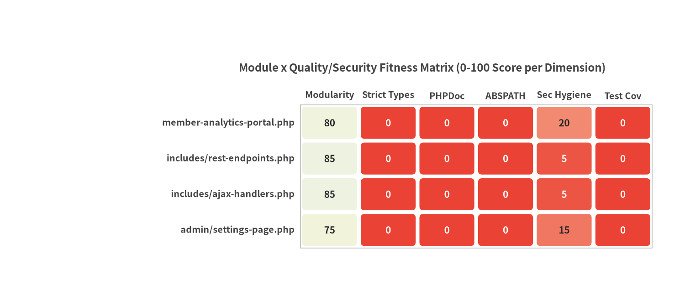
Source Code
from drawlib.canvas import save, setup
from drawlib.charts.heatmap import HeatmapChart
from drawlib.styles import Styles
setup(width=146, height=62, dpi=150)
hm = HeatmapChart(
styles=[Styles.DangerFlat, Styles.WarningNeutral, Styles.SuccessNeutral],
x_categories=["Modularity", "Strict Types", "PHPDoc", "ABSPATH", "Sec Hygiene", "Test Cov"],
axis_line_style=Styles.MutedThin,
width=104.0,
height=44.0,
min_value=0.0,
max_value=100.0,
cell_gap=0.8,
cell_r=0.8,
value_format="{:.0f}",
auto_contrast_text=True,
x_label_position="top",
axis_text_style=Styles.DarkBold.patch(text_size=9.5),
value_text_style=Styles.DarkBold.patch(text_size=10.0),
title="Module x Quality/Security Fitness Matrix (0-100 Score per Dimension)",
title_style=Styles.DarkBold.patch(text_size=11.5),
)
hm.add_row("member-analytics-portal.php", [80, 0, 0, 0, 20, 0])
hm.add_row("includes/rest-endpoints.php", [85, 0, 0, 0, 5, 0])
hm.add_row("includes/ajax-handlers.php", [85, 0, 0, 0, 5, 0])
hm.add_row("admin/settings-page.php", [75, 0, 0, 0, 15, 0])
hm.draw(xy=(38.0, 6.0))
save()
PHP 8.2 ランタイムスモーク検証 vs. テストカバレッジゼロ診断
PNI は隔離された Docker PHP 8.2 ランタイムハーネス（.pni/dockerfiles/examples/php/wp_plugin_messy/Dockerfile、テンプレート php/raw.dockerfile）で検証を実施しました。コンテナビルド（49.1s）、構文ゲート（php -l、0.72s）、および WordPress スタブ環境でのプラグイン起動スモーク（0.64s・5 フック登録）はいずれも成功したものの、PHPUnit/Pest テストが 1 件も存在しないため coverage.measured=False となり、今後のセキュリティ修正に対する自動回帰保護が完全に欠如しています。

Source Code
from drawlib.canvas import save, setup
from drawlib.charts.bar import BarChart
from drawlib.icons import phosphor
from drawlib.smartarts import CardList, Panel
from drawlib.styles import Colors, Styles
from drawlib.text import text
setup(width=148, height=66, dpi=150)
left = Panel(
text="Docker PHP 8.2 Runtime Harness Gates (RV-01 .. RV-04)",
style=Styles.Neutral.patch(shape_r=2.0, shape_fill_color=Colors.White, shape_line_color=Colors.Gray4),
header_style=Styles.PrimaryNeutral.patch(shape_r=2.0),
text_style=Styles.DarkBold.patch(text_size=10.2),
header_variant="filled",
header_height=9.0,
)
left.draw((3.0, 4.0), width=68.0, height=58.0)
gates = CardList(
style=Styles.Neutral.patch(shape_r=1.4, shape_fill_color=Colors.Gray1, shape_line_color=Colors.Gray3),
text_style=Styles.DarkBold.patch(text_size=9.5),
description_style=Styles.Muted.patch(text_size=8.6),
badge_shape="rounded_rect",
direction="vertical",
spacing=2.2,
)
gates.add(
"RV-01 Harness Build (49.1s)",
"php/raw.dockerfile (PHP 8.2) built, exit 0",
badge_text="PASS",
badge_style=Styles.SuccessNeutral,
badge_text_style=Styles.SuccessBold.patch(text_size=9.0),
icon=phosphor.check_circle,
icon_style=Styles.Success,
)
gates.add(
"RV-02 Syntax Lint vs. Tests (0.72s)",
"php -l OK (4/4 files); 0 PHPUnit tests found",
badge_text="WARN",
badge_style=Styles.WarningNeutral,
badge_text_style=Styles.WarningBold.patch(text_size=9.0),
icon=phosphor.warning_circle,
icon_style=Styles.Warning,
)
gates.add(
"RV-03 PCOV Line Coverage",
"coverage.measured=False (no tests/ suite)",
badge_text="FAIL",
badge_style=Styles.DangerNeutral,
badge_text_style=Styles.DangerBold.patch(text_size=9.0),
icon=phosphor.x_circle,
icon_style=Styles.Danger,
)
gates.add(
"RV-04 WP Hook Smoke Probe (0.64s)",
"Entrypoint loaded cleanly; 5 hooks active",
badge_text="PASS",
badge_style=Styles.SuccessNeutral,
badge_text_style=Styles.SuccessBold.patch(text_size=9.0),
icon=phosphor.plug,
icon_style=Styles.Success,
)
gates.draw((5.5, 6.5), width=63.0, height=44.5)
text(
(116.0, 59.0),
"Static Quality & Coverage Metrics (%)",
style=Styles.DarkBold.patch(text_size=10.5),
)
bar = BarChart(
categories=[
"Import Hygiene",
"Strict Typing",
"PHPDoc",
"ABSPATH Guard",
"Unit Test Cov",
],
axis_line_style=Styles.MutedDashed,
axis_text_style=Styles.DarkBold.patch(text_size=9.2),
grid_style=Styles.MutedThin,
width=46.0,
height=46.0,
orientation="horizontal",
bar_r=0.7,
value_text_style=Styles.DarkBold.patch(text_size=9.5),
value_format="{:.0f}%",
)
bar.add_series("Measured %", [75.0, 0.0, 0.0, 0.0, 0.0], style=Styles.PrimaryFlat)
bar.draw(xy=(96.0, 8.0))
save()
静的 AST 品質・運用レディネス定量テレメトリ
| カテゴリ | 指標 | 観測値 | 評価 |
|---|---|---|---|
| コード規模 | PHP ファイル数 / LOC / 関数数 / クラス数 | 4 / 84 / 7 / 0 |
コンパクトな手続き型構成だが、OOP 名前空間・クラス境界が皆無。 |
| インポート衛生 | import_hygiene_coverage_pct / 循環依存 |
75.0% / 0 |
非巡回構成だが、member-analytics-portal.php:11-13 が Composer PSR-4 ではなく手動 require_once 3 件を使用。 |
| 型安全性 | type_safety_coverage_pct / 型指摘件数 |
0.0% / 11 |
全 4 ファイルで declare(strict_types=1) 欠落、全 7 関数で戻り値型欠落、$request・$atts 引数も未型付け。 |
| ドキュメント | docstring_coverage_pct / PHPDoc 欠落 |
0.0% / 7 |
全公開関数で /** ... */ PHPDoc ブロックが皆無、README.md は 2 行。 |
| SIG 保守性 | 高複雑度関数 / 過多引数 / グローバル状態 | 0 / 0 / 13 |
関数は短いが、global $wpdb 3 箇所と $_GET/$_POST 直接参照 10 箇所がグローバル状態へ強結合。 |
| WordPress 衛生 | framework_issues_count / modernization_hints |
16 / 1 |
ABSPATH 欠落 4 件、CSRF Nonce 欠落 3 件、current_user_can() 欠落 3 件、未サニタイズ入力 6 件、直書き <script> 1 件。 |
| 12-Factor / PRR | バグ誘発慣用 / I/O タイムアウト欠落 / 無構造ログ | 1 / 1 / 1 |
@file_get_contents() によるタイムアウト無指定・エラー抑止（admin/settings-page.php:21）と print_r($rows) 出力（includes/rest-endpoints.php:21）。 |
コンテナランタイム検証・フック登録スモーク詳細
| ゲート | 判定 | 所要時間 | 実行内容および観測結果 |
|---|---|---|---|
| RV-01 ハーネスビルド | PASS | 49.1s |
.pni/dockerfiles/examples/php/wp_plugin_messy/Dockerfile（php/raw.dockerfile、PHP_VERSION=8.2）を終了コード 0 でビルド完了。なおプラグインヘッダは EOL Requires PHP: 7.4 のまま。 |
| RV-02 構文チェック・単体テスト | WARN | 0.72s |
全 4 .php ファイルで php -l 合格。一方 tests/ や *Test.php が存在せず total_tests=0（passed=0, failed=0）。 |
| RV-03 カバレッジ計測 | FAIL | — | coverage.measured=False（PHPUnit テストスイート不在のため PCOV 未実行）。 |
| RV-04 WP フックスモーク | PASS | 0.64s |
WordPress 登録 API スタブ下で member-analytics-portal.php を正常読込（HTTP 200 相当）。rest_api_init、member_analytics_badge、wp_ajax_nopriv_map_search_members、wp_ajax_map_purge_logs、admin_menu の計 5 フック登録を確認。 |
6. 詳細分析：セキュリティ・サプライチェーン・API 攻撃面
セキュリティは本監査における最大の支配的リスク要因です（Security 30/100・グレード D、security_vulnerability_audit 14/100）。Trivy SCA による宣言済み Composer アプリ依存 CVE は 0 件であり、非出荷のテストハーネス OS CVE もスコアから適切に分離されていますが、examples/php/wp_plugin_messy の全 4 モジュールに CWE-89 SQL インジェクション、CWE-79 反射型 XSS、CWE-352 CSRF、CWE-862 認可欠如、およびハードコード秘密鍵漏洩が実在します。
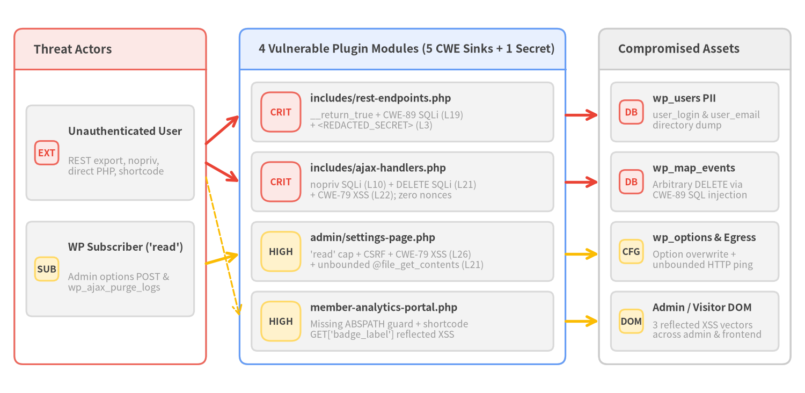
Source Code
from drawlib.canvas import save, setup
from drawlib.lines import line
from drawlib.smartarts import CardList, Panel
from drawlib.styles import Colors, Styles
setup(width=168, height=82, dpi=150)
actors = Panel(
text="Threat Actors",
style=Styles.Neutral.patch(shape_r=1.8, shape_fill_color=Colors.White, shape_line_color=Colors.Gray4),
header_style=Styles.DangerNeutral.patch(shape_r=1.8),
text_style=Styles.DarkBold.patch(text_size=10.5),
header_variant="filled",
header_height=8.5,
)
actors.draw((3.0, 6.0), width=40.0, height=70.0)
actor_cards = CardList(
style=Styles.Neutral.patch(shape_r=1.2, shape_fill_color=Colors.Gray1, shape_line_color=Colors.Gray3),
text_style=Styles.DarkBold.patch(text_size=9.4),
description_style=Styles.Muted.patch(text_size=8.6),
badge_shape="rounded_rect",
direction="vertical",
spacing=4.5,
)
actor_cards.add(
"Unauthenticated User",
"REST export, nopriv,\ndirect PHP, shortcode",
badge_text="EXT",
badge_style=Styles.DangerNeutral,
badge_text_style=Styles.DangerBold.patch(text_size=8.4),
)
actor_cards.add(
"WP Subscriber ('read')",
"Admin options POST &\nwp_ajax_purge_logs",
badge_text="SUB",
badge_style=Styles.WarningNeutral,
badge_text_style=Styles.WarningBold.patch(text_size=8.4),
)
actor_cards.draw((5.5, 16.0), width=35.0, height=44.0)
modules = Panel(
text="4 Vulnerable Plugin Modules (5 CWE Sinks + 1 Secret)",
style=Styles.Neutral.patch(shape_r=1.8, shape_fill_color=Colors.White, shape_line_color=Colors.Gray4),
header_style=Styles.PrimaryNeutral.patch(shape_r=1.8),
text_style=Styles.DarkBold.patch(text_size=10.2),
header_variant="filled",
header_height=8.5,
)
modules.draw((50.0, 6.0), width=68.0, height=70.0)
mod_cards = CardList(
style=Styles.Neutral.patch(shape_r=1.2, shape_fill_color=Colors.Gray1, shape_line_color=Colors.Gray3),
text_style=Styles.DarkBold.patch(text_size=9.2),
description_style=Styles.Muted.patch(text_size=8.4),
badge_shape="rounded_rect",
direction="vertical",
spacing=2.2,
)
mod_cards.add(
"includes/rest-endpoints.php",
"__return_true + CWE-89 SQLi (L19)\n+ <REDACTED_SECRET> (L3)",
badge_text="CRIT",
badge_style=Styles.DangerNeutral,
badge_text_style=Styles.DangerBold.patch(text_size=8.4),
)
mod_cards.add(
"includes/ajax-handlers.php",
"nopriv SQLi (L10) + DELETE SQLi (L21)\n+ CWE-79 XSS (L22); zero nonces",
badge_text="CRIT",
badge_style=Styles.DangerNeutral,
badge_text_style=Styles.DangerBold.patch(text_size=8.4),
)
mod_cards.add(
"admin/settings-page.php",
"'read' cap + CSRF + CWE-79 XSS (L26)\n+ unbounded @file_get_contents (L21)",
badge_text="HIGH",
badge_style=Styles.WarningNeutral,
badge_text_style=Styles.WarningBold.patch(text_size=8.4),
)
mod_cards.add(
"member-analytics-portal.php",
"Missing ABSPATH guard + shortcode\nGET['badge_label'] reflected XSS",
badge_text="HIGH",
badge_style=Styles.WarningNeutral,
badge_text_style=Styles.WarningBold.patch(text_size=8.4),
)
mod_cards.draw((52.5, 8.8), width=63.0, height=56.0)
assets = Panel(
text="Compromised Assets",
style=Styles.Neutral.patch(shape_r=1.8, shape_fill_color=Colors.White, shape_line_color=Colors.Gray4),
header_style=Styles.Neutral.patch(shape_r=1.8),
text_style=Styles.DarkBold.patch(text_size=10.5),
header_variant="filled",
header_height=8.5,
)
assets.draw((125.0, 6.0), width=40.0, height=70.0)
asset_cards = CardList(
style=Styles.Neutral.patch(shape_r=1.2, shape_fill_color=Colors.Gray1, shape_line_color=Colors.Gray3),
text_style=Styles.DarkBold.patch(text_size=9.2),
description_style=Styles.Muted.patch(text_size=8.4),
badge_shape="rounded_rect",
direction="vertical",
spacing=2.2,
)
asset_cards.add(
"wp_users PII",
"user_login & user_email\ndirectory dump",
badge_text="DB",
badge_style=Styles.DangerNeutral,
badge_text_style=Styles.DangerBold.patch(text_size=8.4),
)
asset_cards.add(
"wp_map_events",
"Arbitrary DELETE via\nCWE-89 SQL injection",
badge_text="DB",
badge_style=Styles.DangerNeutral,
badge_text_style=Styles.DangerBold.patch(text_size=8.4),
)
asset_cards.add(
"wp_options & Egress",
"Option overwrite +\nunbounded HTTP ping",
badge_text="CFG",
badge_style=Styles.WarningNeutral,
badge_text_style=Styles.WarningBold.patch(text_size=8.4),
)
asset_cards.add(
"Admin / Visitor DOM",
"3 reflected XSS vectors\nacross admin & frontend",
badge_text="DOM",
badge_style=Styles.WarningNeutral,
badge_text_style=Styles.WarningBold.patch(text_size=8.4),
)
asset_cards.draw((127.5, 8.8), width=35.0, height=56.0)
line((43.0, 52.0), (50.0, 58.0), arrow_head="->", style=Styles.DangerBold)
line((43.0, 48.0), (50.0, 44.0), arrow_head="->", style=Styles.DangerBold)
line((43.0, 27.0), (50.0, 29.0), arrow_head="->", style=Styles.WarningBold)
line((43.0, 45.0), (50.0, 16.0), arrow_head="->", style=Styles.WarningDashed)
line((118.0, 58.0), (125.0, 58.0), arrow_head="->", style=Styles.DangerBold)
line((118.0, 44.0), (125.0, 44.0), arrow_head="->", style=Styles.DangerBold)
line((118.0, 29.0), (125.0, 29.0), arrow_head="->", style=Styles.WarningBold)
line((118.0, 15.0), (125.0, 15.0), arrow_head="->", style=Styles.WarningBold)
save()
アプリ層セキュリティ検出内訳とハーネス OS CVE の厳格分離
PNI は出荷されるアプリ依存およびプロジェクト Dockerfile 脆弱性と、非出荷のテストハーネス基盤 OS パッケージを厳格に分離して集計します。wp_plugin_messy には composer.json もプロジェクト Dockerfile も存在しないため、Trivy はアプリ CVE 0 件・プロジェクト OS CVE 0 件と判定しつつ、テストハーネス（.pni/dockerfiles/examples/php/wp_plugin_messy/Dockerfile）由来の 3,512 件の OS CVE（CRITICAL 6、HIGH 355、MEDIUM 2,005、LOW 1,125）をスコア計算から完全に除外しました。
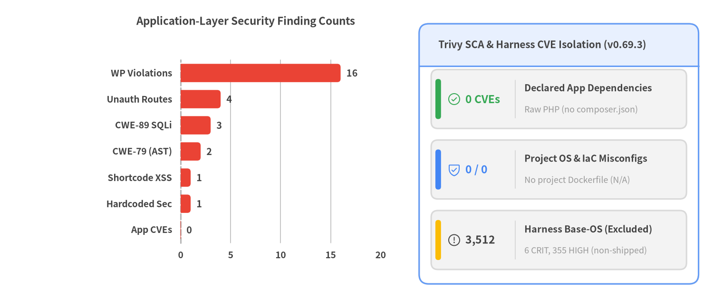
Source Code
from drawlib.canvas import save, setup
from drawlib.charts.bar import BarChart
from drawlib.icons import phosphor
from drawlib.smartarts import KpiCards, Panel
from drawlib.styles import Colors, Styles
from drawlib.text import text
setup(width=148, height=64, dpi=150)
text(
(51.0, 59.5),
"Application-Layer Security Finding Counts",
style=Styles.DarkBold.patch(text_size=10.8),
)
bar = BarChart(
categories=[
"WP Violations",
"Unauth Routes",
"CWE-89 SQLi",
"CWE-79 (AST)",
"Shortcode XSS",
"Hardcoded Sec",
"App CVEs",
],
axis_line_style=Styles.MutedDashed,
axis_text_style=Styles.DarkBold.patch(text_size=9.2),
grid_style=Styles.MutedThin,
width=57.0,
height=46.0,
orientation="horizontal",
bar_r=0.7,
value_text_style=Styles.DarkBold.patch(text_size=9.5),
value_format="{:.0f}",
)
bar.add_series("Count", [16.0, 4.0, 3.0, 2.0, 1.0, 1.0, 0.0], style=Styles.DangerFlat)
bar.draw(xy=(25.0, 8.0))
panel = Panel(
text="Trivy SCA & Harness CVE Isolation (v0.69.3)",
style=Styles.Neutral.patch(shape_r=2.0, shape_fill_color=Colors.White, shape_line_color=Colors.Gray4),
header_style=Styles.PrimaryNeutral.patch(shape_r=2.0),
text_style=Styles.DarkBold.patch(text_size=10.0),
header_variant="filled",
header_height=8.8,
)
panel.draw((87.0, 5.0), width=58.0, height=54.0)
cards = KpiCards(
style=Styles.Neutral.patch(shape_r=1.4, shape_fill_color=Colors.Gray1, shape_line_color=Colors.Gray3),
metric_style=Styles.DarkBold.patch(text_size=11.0),
text_style=Styles.DarkBold.patch(text_size=9.4),
description_style=Styles.Muted.patch(text_size=8.6),
accent_position="left_pill",
metric_layout="left_column",
metric_width_ratio=0.28,
spacing=2.4,
)
cards.add(
"0 CVEs",
"Declared App Dependencies",
"Raw PHP (no composer.json)",
accent_style=Styles.SuccessFlat,
metric_style=Styles.SuccessBold.patch(text_size=11.0),
icon=phosphor.check_circle,
icon_style=Styles.Success,
)
cards.add(
"0 / 0",
"Project OS & IaC Misconfigs",
"No project Dockerfile (N/A)",
accent_style=Styles.PrimaryFlat,
metric_style=Styles.PrimaryBold.patch(text_size=11.0),
icon=phosphor.shield_check,
icon_style=Styles.Primary,
)
cards.add(
"3,512",
"Harness Base-OS (Excluded)",
"6 CRIT, 355 HIGH (non-shipped)",
accent_style=Styles.WarningFlat,
metric_style=Styles.WarningBold.patch(text_size=11.0),
icon=phosphor.warning_circle,
icon_style=Styles.Warning,
)
cards.draw((89.5, 8.0), width=53.0, height=41.5, columns=1)
save()
セキュリティ制御ゲート評価（SEC-01 .. SEC-05）
| ゲート | 判定 | 評価詳細 |
|---|---|---|
| SEC-01 | PASS（未管理） | 宣言済み Composer ランタイム/開発 CVE は 0 件（composer.json/composer.lock 不在の生 PHP）。テストハーネス由来 OS CVE 3,512 件はプロジェクト評価から適切に除外。 |
| SEC-02 | N/A | 出荷対象のプロジェクト Dockerfile や IaC マニフェストは存在しない（misconfig_count=0）。 |
| SEC-03 | FAIL（CRITICAL） | includes/rest-endpoints.php:3 にてグローバル変数 $map_webhook_secret = '<REDACTED_SECRET>' へ Webhook 秘密鍵をハードコード。 |
| SEC-04 | FAIL（HIGH） | HIGH CWE 危険シンク 5 件（CWE-89 SQLi ×3、CWE-79 反射型 XSS ×2）に加え、member-analytics-portal.php:20-21 のショートコード $_GET['badge_label'] XSS を検出。 |
| SEC-05 | FAIL（CRITICAL） | 抽出エンドポイント 5 件中 4 件で認証ヒントが欠落（REST __return_true、wp_ajax_nopriv、ABSPATH 欠落による直接実行）。さらに 'read' 権限での管理設定変更・CSRF 不備あり。 |
AST 危険コードシンクおよびハードコード秘密鍵一覧
| 重要度 | CWE / ルール | 該当箇所・シンボル | 脆弱パターン | 必須是正策 |
|---|---|---|---|---|
| CRITICAL | common/security |
includes/rest-endpoints.php:3（$map_webhook_secret） |
グローバルスコープでの Webhook 秘密鍵ハードコード（<REDACTED_SECRET>）。 |
リテラル即時削除・鍵ローテーション後、wp-config.php 定数または環境変数から読込。 |
| HIGH | CWE-89（sql_injection） |
includes/rest-endpoints.php:19（map_export_all_members） |
$wpdb->get_results($sql) に生の $_GET['role_filter'] を LIKE 句へ直接文字列結合。 |
$request->get_param('role_filter')、$wpdb->esc_like()、$wpdb->prepare() を適用。 |
| HIGH | CWE-89（sql_injection） |
includes/ajax-handlers.php:10（map_ajax_search_members） |
$wpdb->get_results("SELECT ID, display_name, user_email FROM {$wpdb->users} WHERE display_name LIKE '%" . $term . "%'")。 |
$wpdb->prepare() + $wpdb->esc_like() でパラメータ化し、wp_ajax_nopriv を削除。 |
| HIGH | CWE-89（sql_injection） |
includes/ajax-handlers.php:21（map_ajax_purge_logs） |
$wpdb->query("DELETE FROM wp_map_events WHERE category = '" . $category . "'")。 |
$wpdb->prepare() 化に加え check_ajax_referer() と current_user_can('manage_options') を強制。 |
| HIGH | CWE-79（xss） |
includes/ajax-handlers.php:22（map_ajax_purge_logs） |
echo "Purged category: " . $_POST['category']; の未エスケープ出力。 |
esc_html() 適用の上で wp_send_json_success() による構造化 JSON を返却。 |
| HIGH | CWE-79（xss） |
admin/settings-page.php:26（map_render_settings_page） |
echo $_GET['tab'] ?? 'general';（および 29 行目の未エスケープ $active_tab 属性）。 |
許可リスト検証と esc_html() / esc_attr() による出力エスケープを実施。 |
| HIGH | common/security（xss） |
member-analytics-portal.php:20-21（map_render_badge_shortcode） |
生の $_GET['badge_label'] を <span class="map-badge"> へ直接結合。 |
shortcode_atts() から取得し sanitize_text_field() と esc_html() を適用。 |
抽出 HTTP API・直接アクセス攻撃面一覧（api_endpoints）
| メソッド | エンドポイント / 直接アクセス経路 | ハンドラ・箇所 | 認証境界ステータス | セキュリティ影響 |
|---|---|---|---|---|
GET |
/wp-json/member-analytics/v1/export |
map_export_all_members（includes/rest-endpoints.php:7） |
なし（__return_true） |
未認証での wp_users PII 流出 + CWE-89 SQLi + ?debug print_r() 漏洩。 |
POST |
/wp-admin/admin-ajax.php?action=map_search_members |
map_ajax_search_members（includes/ajax-handlers.php:3） |
なし（wp_ajax_nopriv） |
未認証での wp_users 検索 + CWE-89 SQLi + Nonce 検証ゼロ。 |
POST |
/wp-admin/admin-ajax.php?action=map_purge_logs |
map_ajax_purge_logs（includes/ajax-handlers.php:4） |
wp_ajax_session のみ |
ログイン済み購読者から CSRF 経由の DELETE SQLi（CWE-89）と反射型 XSS（CWE-79）が可能。 |
ANY |
/examples/php/wp_plugin_messy/admin/settings-page.php |
settings-page.php（admin/settings-page.php:1） |
なし（ABSPATH 欠落） |
PHP 直接実行リスクに加え、WP 管理画面経由でも 'read' 権限で設定改ざん・@file_get_contents() 外部通信・CWE-79 XSS が発生。 |
GET |
/examples/php/wp_plugin_messy/member-analytics-portal.php |
member-analytics-portal.php（member-analytics-portal.php:1） |
なし（ABSPATH 欠落） |
PHP 直接実行リスクおよびショートコードの $_GET['badge_label'] 反射型 XSS。 |
サプライチェーン・ガバナンス基盤状況
- 依存関係管理:
has_manifest=False、has_lockfile=False、dependencies_count=0（手動require_onceの生 PHP）。アプリ CVE 0 件はロックファイル監査済みではなく未管理構成に起因します。 - ランタイムサポート: プラグインヘッダは
Requires PHP: 7.4（2022 年 11 月 EOL）を宣言しており、PHP8.2+/8.3+への引き上げが必須です。 - リポジトリガバナンス:
LICENSE、SECURITY.md、.gitignore、GitHub Actions CI、および Dependabot/Renovate がすべて未設定（has_security_policy=False、has_dependency_automation=False）。